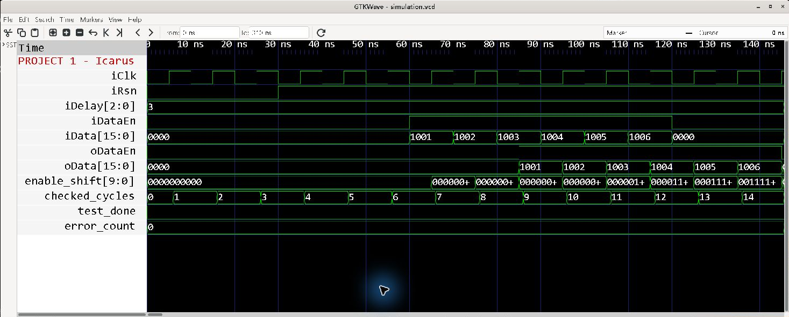
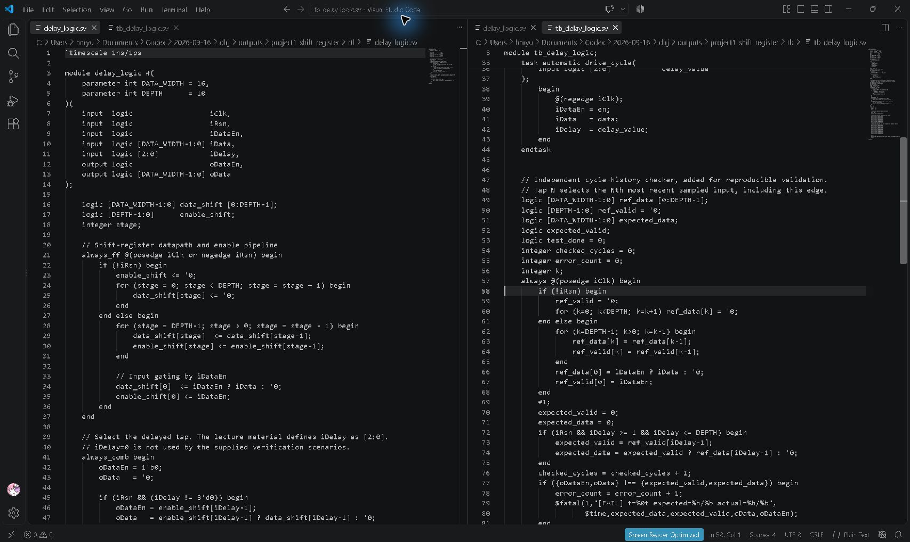
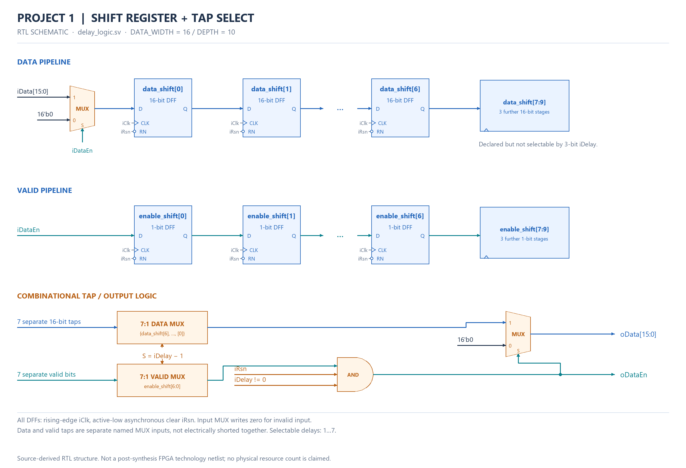
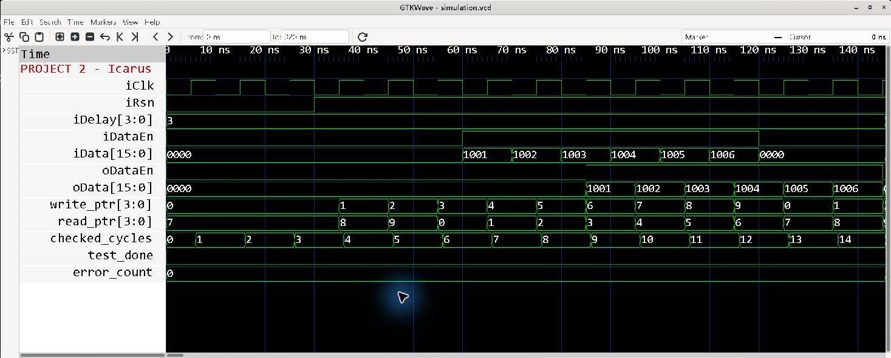
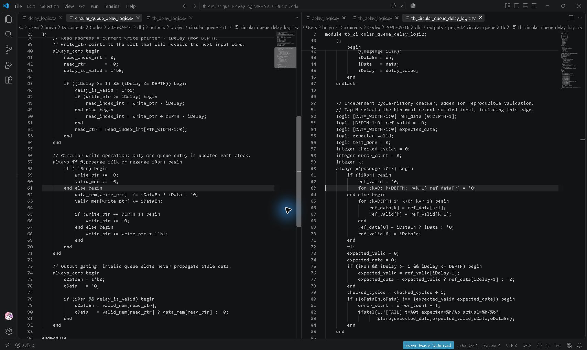
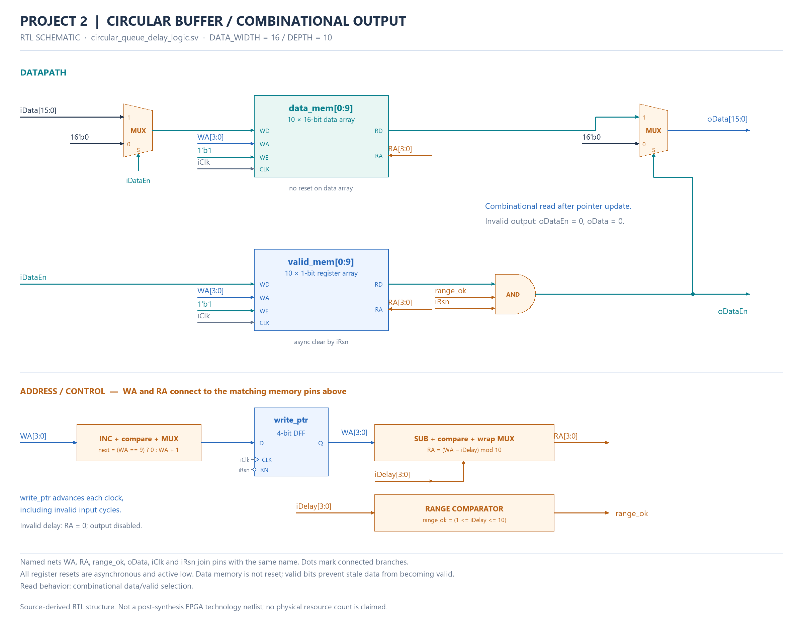
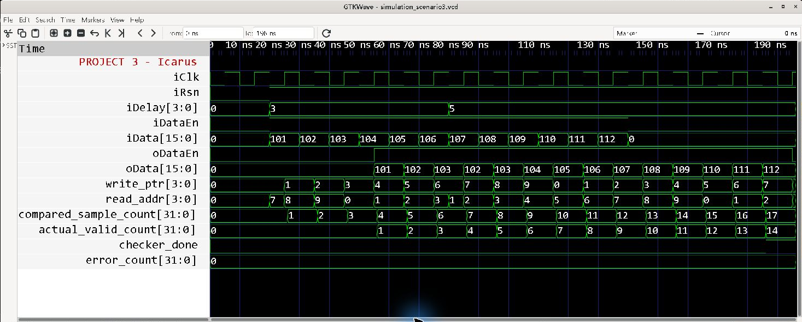
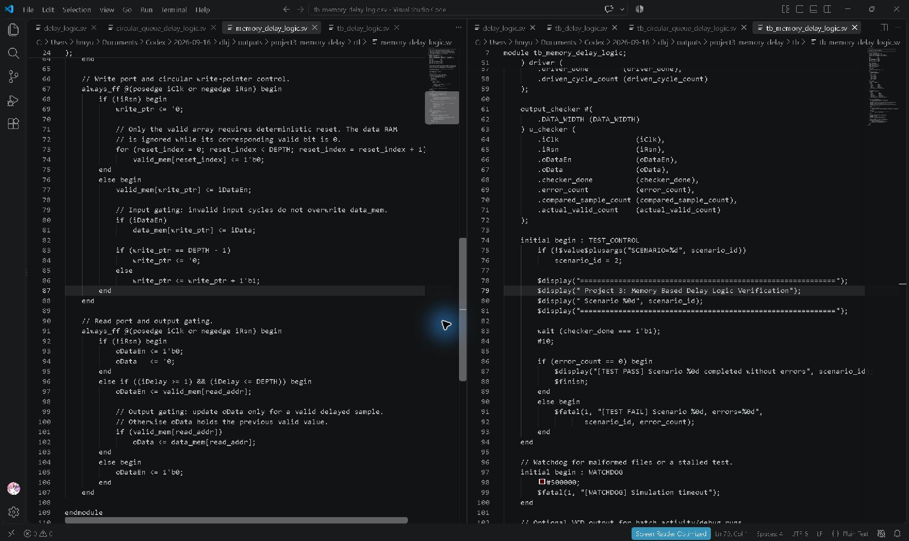
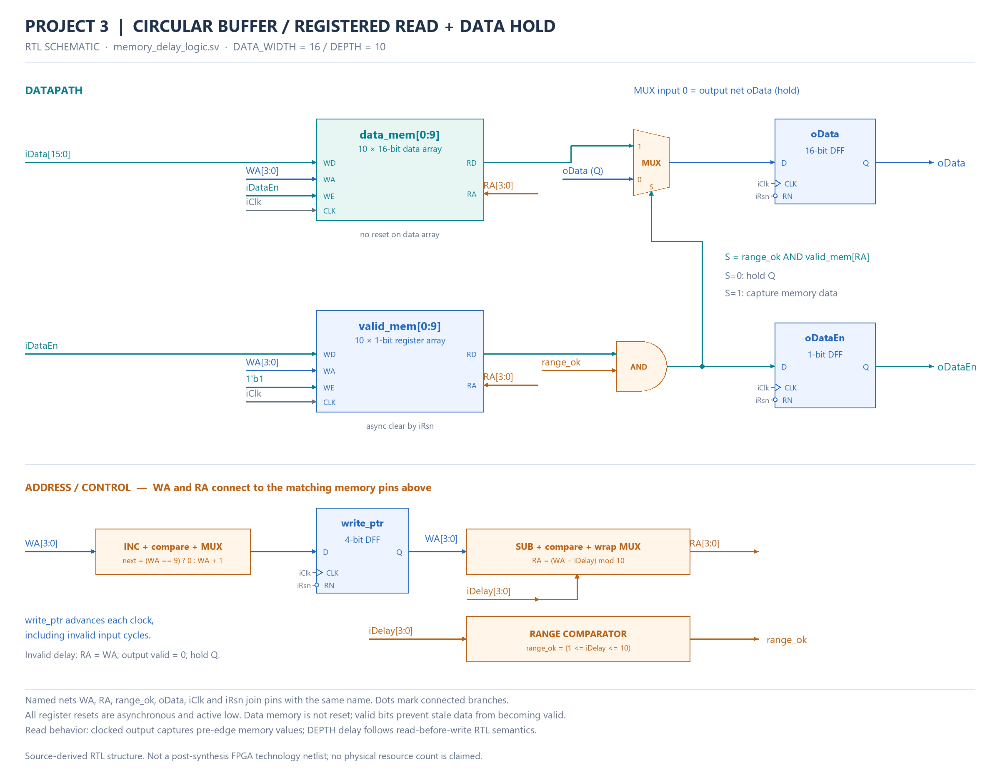

FPGA Programmable Delay Logic
Actual GTKWave and VS Code screenshots · 2026-09-16
Icarus Verilog 14.0 · GTKWave · VS Code · SystemVerilog
| Project | Actual result | Errors |
|---|---|---|
| 1 — Shift Register | 31 checked cycles PASS | 0 |
| 2 — Circular Queue | 32 checked cycles PASS | 0 |
| 3 — Memory + Registered Output | 3 scenarios: 8/5, 14/4, 17/14 checked/valid cycles PASS | 0 |
Waveforms and code are captured from the actual GTKWave and VS Code windows. The separate gate/register schematics are derived from RTL. Quartus, ModelSim and synthesis/PPA were not executed in this run.
Project 1/2: tap N includes the current sampled edge; invalid output = 0. Project 3: registered output after N periods; invalid output holds its previous data.
Project 1 — Shift Register
RTL / Testbench / VCD / Logs / Reproduction



{kind=link}
Project 2 — Circular Queue
RTL / Testbench / VCD / Logs / Reproduction



{kind=link}
Project 3 — Memory + Registered Output
RTL / Testbench / VCD / Logs / Reproduction



{kind=link}
{kind=link}
Capture provenance · Verification manifest
Historical teaching diagrams and earlier regression
July 2026 archive (separate run)
- project1_shift_register_datapath: SVG · PNG
- project1_testbench_architecture: SVG · PNG
- project1_expected_timing: SVG · PNG
- project2_circular_queue_architecture: SVG · PNG
- project2_architecture_comparison: SVG · PNG
- project2_ppa_matrix: SVG · PNG
- project3_file_driven_verification: SVG · PNG
- project3_scenario_flow: SVG · PNG
{kind=link}
{kind=link}
{kind=link}
{kind=link}
{kind=link}
{kind=link}
{kind=link}
{kind=link}
{kind=link}
{kind=link}
{kind=link}
{kind=link}
{kind=link}
{kind=link}
{kind=link}
{kind=link}